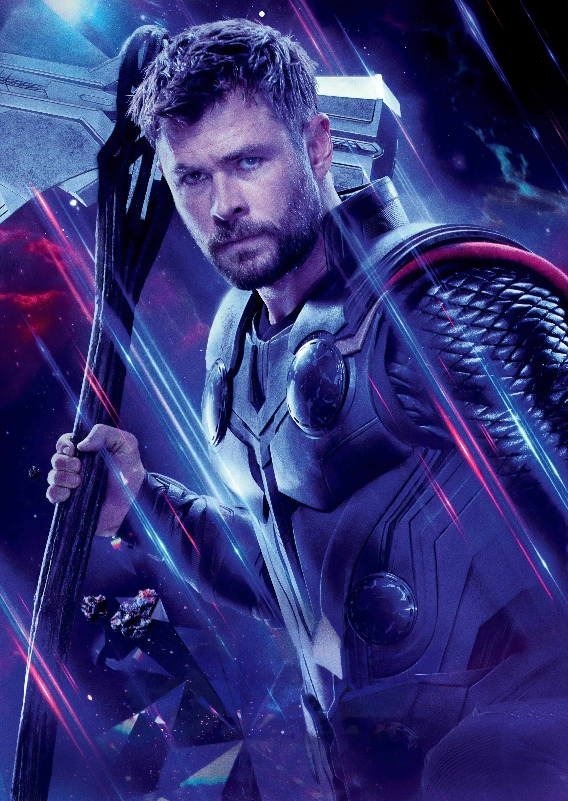

Thor Odinson
Thor
Full Name: Thor Odinson
Species: Asgardian
Citizenship: Asgardian
Date of Birth: 964 A.D. - 965 A.D.
Title/s:
God of Thunder
Prince of Asgard
King of Asgard
King of New Asgard
Date of Death: June 2, 2010 (revived by Mjolnir)
Status: Alive
Top Rated Scenes
Biography
Thor Odinson is the Asgardian God of Thunder, the former king of both Asgard and New Asgard, and a founding member of the Avengers. When his irresponsible and impetuous behavior reignited an ancient war between Asgard and Jotunheim, Thor was denied the right to become king, stripped of his power and hammer Mjølnir, he was banished to Earth by Odin. While exiled on Earth, Thor found love with Jane Foster, and learned humility by saving his new friends from the Destroyer sent by Loki. Due to his selfless act of sacrifice, Thor redeemed himself in his father's eyes and was granted his power once more, which he then used to defeat Loki's schemes of genocide.
Upon being welcomed back to Asgard as a hero, Thor was forced to return to Earth in order to retrieve Loki after he had begun his attempt at world domination with the Tesseract. Thor joined the Avengers under the guidance of S.H.I.E.L.D. and stood with them to stop Loki's schemes, eventually following the newly formed team as they battled against Loki's Chitauri army during the Battle of New York. After Loki's defeat, Thor captured and returned him to Asgard to await justice for his crimes.
Thor helped the Asgardian armies restore peace across all of the Nine Realms during the War of the Nine Realms. However, the peace was disrupted by Malekith and the Dark Elves, who wanted to use the Aether to plunge the Nine Realms into eternal darkness. When Foster absorbed the Aether, Thor rallied to protect her on Asgard, leading to an attack by Malekith which resulted in Frigga's death. When the Aether was eventually removed from Foster, Thor helped defeat Malekith and his forces before they could unleash the Aether during the Convergence. Thor renounced his claim to the throne and left Asgard for Earth so he could stay with Foster. During their time together, Thor enchanted Mjølnir to protect Foster.
During his stay on Earth, Thor helped the Avengers to locate Loki's Scepter during the fight against HYDRA. Following HYDRA's defeat and the capture of Baron Strucker, the team had to stop the newly created Ultron, a rogue A.I. created by Tony Stark which conspired to bring about human extinction. Once Ultron had been defeated, Thor went back to Asgard to investigate the visions he saw when being manipulated by Wanda Maximoff of the Infinity Stones. In his investigations, Thor also discovered that Loki was still alive and had usurped Odin's royal throne during Thor's absence.
To aid in both pursuing his brother and finding his father to return peace to Asgard, Thor sought help from Doctor Strange, who led him to Odin moments before his passing to Valhalla. Shortly afterwards, Thor met Hela, the Goddess of Death and his sister. In the wake of his first encounter with Hela, Mjølnir was destroyed and he was stranded in Sakaar, where he was forced to compete in the Contest of Champions. After a reunion and subsequent fight with Hulk, the pair allied with the rogue Valkyrie in order to save Asgard and escape Sakaar. After battling with Hela and losing an eye to her, Thor then had Loki unleash Ragnarök and destroy Asgard, killing Hela in the process, although he escaped with the remaining Asgardians. Declaring that Asgard was all its people and not a place, Thor accepted his newfound position as king and decided to relocate the Asgardians on Earth.
As they were en route to Earth, their ship was attacked by Thanos and the Black Order, who took the the Tesseract and murdered his brother, before leaving Thor for dead. He was rescued by the Guardians of the Galaxy and had teamed up with Rocket Raccoon and Groot to travel to Nidavellir. With the help of Eitri, Thor crafted Stormbreaker and aided the nation of Wakanda and the Avengers in confronting Thanos and his forces. However, Thor squandered his chance to kill Thanos with his new weapon and Thanos activated the completed Infinity Gauntlet and erased half the universe's population from existence. After the Avengers were joined by Captain Marvel, the team traveled to the Garden, where Thor and the Avengers ambushed Thanos, discovering that the Titan destroyed the Stones, ensuring that a reversal of his actions was now impossible. Enraged, Thor beheaded Thanos using Stormbreaker and left the planet.
Following Thanos' death, Thor left the Avengers and relocated to Tønsberg, Norway, where he and the surviving Asgardians resettled, establishing New Asgard. Five years later, Hulk and Rocket convinced the now-overweight and depressed Thor to rejoin the team after discovering how to travel through time. Thor joined the Avengers on their Time Heist and the ensuing battle against an alternate Thanos alongside Captain America and Iron Man, ending in Stark sacrificing his life to destroy Thanos' forces. After attending Stark's funeral, Thor decided to join the Guardians of the Galaxy, proclaiming Valkyrie to succeed him as king of the Asgardians.
In the months following Thanos' defeat, Thor journeyed with the Guardians, but his time with them was brought to an end in 2024 due to Gorr's Vow Against the Gods. During a battle against Gorr, Thor would be joined by his former flame, Jane Foster, who to Thor's surprise now wielded Mjølnir. Thor, joined by Korg, Valkyrie and Foster went on a mission to warn the other gods and get an army to fight Gorr, Thor and his team travel to Omnipotence City to warn Zeus. The disagreement of the Olympians led to confrontation, in which then Thor heavily injured Zeus. Eventually, Thor alongside Foster managed to defeat Gorr but at the cost of her life. After Gorr died, Thor adopted his daughter and trained her, with the duo becoming known as Love and Thunder, who set off upon adventures as protectors of other aliens across the universe.
To aid in both pursuing his brother and finding his father to return peace to Asgard, Thor sought help from Doctor Strange, who led him to Odin moments before his passing to Valhalla. Shortly afterwards, Thor met Hela, the Goddess of Death and his sister. In the wake of his first encounter with Hela, Mjølnir was destroyed and he was stranded in Sakaar, where he was forced to compete in the Contest of Champions. After a reunion and subsequent fight with Hulk, the pair allied with the rogue Valkyrie in order to save Asgard and escape Sakaar. After battling with Hela and losing an eye to her, Thor then had Loki unleash Ragnarök and destroy Asgard, killing Hela in the process, although he escaped with the remaining Asgardians. Declaring that Asgard was all its people and not a place, Thor accepted his newfound position as king and decided to relocate the Asgardians on Earth.
As they were en route to Earth, their ship was attacked by Thanos and the Black Order, who took the the Tesseract and murdered his brother, before leaving Thor for dead. He was rescued by the Guardians of the Galaxy and had teamed up with Rocket Raccoon and Groot to travel to Nidavellir. With the help of Eitri, Thor crafted Stormbreaker and aided the nation of Wakanda and the Avengers in confronting Thanos and his forces. However, Thor squandered his chance to kill Thanos with his new weapon and Thanos activated the completed Infinity Gauntlet and erased half the universe's population from existence. After the Avengers were joined by Captain Marvel, the team traveled to the Garden, where Thor and the Avengers ambushed Thanos, discovering that the Titan destroyed the Stones, ensuring that a reversal of his actions was now impossible. Enraged, Thor beheaded Thanos using Stormbreaker and left the planet.
Following Thanos' death, Thor left the Avengers and relocated to Tønsberg, Norway, where he and the surviving Asgardians resettled, establishing New Asgard. Five years later, Hulk and Rocket convinced the now-overweight and depressed Thor to rejoin the team after discovering how to travel through time. Thor joined the Avengers on their Time Heist and the ensuing battle against an alternate Thanos alongside Captain America and Iron Man, ending in Stark sacrificing his life to destroy Thanos' forces. After attending Stark's funeral, Thor decided to join the Guardians of the Galaxy, proclaiming Valkyrie to succeed him as king of the Asgardians.
In the months following Thanos' defeat, Thor journeyed with the Guardians, but his time with them was brought to an end in 2024 due to Gorr's Vow Against the Gods. During a battle against Gorr, Thor would be joined by his former flame, Jane Foster, who to Thor's surprise now wielded Mjølnir. Thor, joined by Korg, Valkyrie and Foster went on a mission to warn the other gods and get an army to fight Gorr, Thor and his team travel to Omnipotence City to warn Zeus. The disagreement of the Olympians led to confrontation, in which then Thor heavily injured Zeus. Eventually, Thor alongside Foster managed to defeat Gorr but at the cost of her life. After Gorr died, Thor adopted his daughter and trained her, with the duo becoming known as Love and Thunder, who set off upon adventures as protectors of other aliens across the universe.
Sections
The Avengers Database has a collection of images and media related to Thor Odinson.
The Avengers Database has a collection of movies and tv shows related to Thor Odinson.
Sections
Personality
Before his banishment to Earth, Thor was initially conceited, arrogant, immature and stubborn. He had proven to be bloodthirsty and enjoyed the challenge of battle and combat, Laufey even stated on Johutenheim that he craved war, with the Frost Giants in particular, due to being Odin's own wars with them convincing him that they were vicious monsters. This bloodlust began as early as his childhood, with Thor then jesting that he'd hunt down the Frost Giants and slay them all if he became king. His adoptive brother Loki even commented that Thor would have killed the entire race of Frost Giants with his bare hands as an adult. However, it should be noted that Thor still had some honorable traits, as he notably supported his friend Sif in her goals to become a great warrior, while most others would not take her seriously. In his heart, he only wishes to live up to the expectations of his father to become a great king but, in truth, he did have difficulty finding the difference between a ruler and a warrior and what makes each a good man.
Thor was quick to anger and could act rashly to a situation such as when Asgard was broken into his first instinct was to attack the Johtuns to dissuade them to ever do a similar stunt again. Later on, he, Sif and the Warriors Three launched an all-out attack on Jotunheim, ignoring the fact that they'd be sorely outnumbered which seems to stem from arrogance, although at the time he only went to achieve answers on how they infiltrated Asgard. When the Frost Giants had ruined his coronation, he reacted by angrily flipping over a table and finally when he was later insulted by a Frost Giant on Jotunheim, Thor reacted by promptly decapitating the former with Mjølnir and started a fight with the other Frost Giants.
Due to coming from royalty and spending all of his life in Asgard, Thor was out of place in Midgard as his boisterous personality was often part of his charm in Asgard and he was unaware of the customs and norms on Earth. For instance, when he had smashed a cup of a drink that he liked while bellowing "another" (thinking it appropriate in Earth), demanded a horse at a pet store and walked in the middle of a street. His vocabulary and terms of endearment were also antiquated and out of place in the modern times, he was trapped within, baffling everyone around him and leading them to believe he was delusional even though it was simply how people spoke upon Asgard. After returning to arrest Loki, Thor had seemed to gain tact but still thought that Bilgesnipe were existent on Earth. In addition, Thor was shown to initially be quite vain and egotistical. For example, while being restrained by doctors and guards at a hospital, he describes himself as "mighty". He was also left dumbfounded when he found himself restrained only claiming in disbelief that "it's not possible" due to never losing a battle beforehand with his godlike powers.
When his irresponsibility and arrogance placed his home Asgard and the Nine Realms in danger, his father, Odin, banished Thor to Earth and stripped him of all his powers. That, in addition to him discovering that he was no longer worthy of Mjølnir's power, put Thor into a state of depression. This, along with Loki lying that Odin died, humbled him greatly and during his time on Midgard, fell in love with the human Jane Foster which finally taught him the humility and wisdom he was lacking. Hence, after his adoptive brother Loki sent the Destroyer to kill him, Thor defended the Warriors Three and the townspeople of New Mexico and selflessly gave up his own life for the town, thereby finally became worthy of Mjølnir again. After regaining his power, Thor would take too often holding back his great powers, unless battling an opponent of equivalent strength and durability, which Thor notably holding back in all of his duels with Loki, believing that "[his] brother was still in there somewhere".
Thor, however, did still appear to be somewhat hot-tempered, as when he met with Iron Man for the first time, the two battled in the woods, with Thor then proceeding to charge at Captain America, when the latter intervened. However, he quickly came to see that he and the other Avengers were fighting for the same cause and befriended them, notably saving Black Widow from an enraged Hulk.
At this time, Thor would become far more responsible than before, since as soon as the Bifrost was regenerated by energy from the Tesseract, Thor took it upon himself to safeguard the worlds of the Nine Realms that had fallen into chaos and conflict in the Asgardians' absence. Following losing Foster after the Bifrost destruction, Thor also became somewhat somber and Sif herself noticed this personality shift from how he used to celebrate all night long to simply staring idly at the ongoing feast of his friends. Thor has learned from his mistakes and has grown to such lengths that he surpassed Loki and even Odin. He was willing to commit treason and spare his enemies if it was honorable as he destroyed the Bifrost to spare Jotunheim and free Loki, going against the Allfather by taking the Aether to Svartalfheim to destroy Malekith as Odin's way would result in countless of Asgardians' death.
While Thor was destined to become the King of Asgard, however, he eventually realized, that he couldn't actively protect the Nine Realms from the throne, and selflessly denied his birthright, even offering Mjølnir to (who he thought was) Odin. After helping the Avengers defeat Ultron, Thor temporarily left his friends, taking it upon himself to find the rest of the Infinity Stones and learn the identity of the ultimate enemy.
Whatever remained of Thor's boastful personality has seemingly vanished since Odin's death and Hela destroying Mjølnir. Without an object to channel his supernatural powers, even though he retained his immense superhuman might, and with the guilt of having failed to save his father, Thor believed he was worthless which made any remains of arrogance that he had completely disappeared, as can be seen with his interactions towards people have become more awkward and overly-excitable such as when he realized that Brunnhilde was a Valkyrie on Sakaar, he tried to explain and convince her to join him rather than ordering her like he would have done with any other Asgardians. Nevertheless, while Thor's arrogance has disappeared fully, he still remains utmostly confident and assured in his abilities as a warrior, as can be witnessed when he told Grandmaster to “point [him] in the direction of whoever's ass [he] has to kick,” despite his champion being praised as a savage opponent. The knowledge of how Asgard really rose to power further humbled Thor even more, as he was shocked and dismayed of his father's war seeking past. Although his love and respect for Odin remained as high as ever, he has come to accept that Odin's darker nature indirectly caused Ragnarok and openly admitted that Odin had flaws in his own right, even saying that Hela had a right to be angry with Odin. Though Thor has mostly unlocked the full magnitude of his powers since Asgard's destruction and Hela's defeat there still remains an awkwardness to his character, especially when compared to his previous personality. During his original coronation, he yelled uproariously towards his subjects in a victorious manner but when ascending to King of Asgard he only awkwardly waved to the Asgardians behind him.
After Thanos attacked and massacred half of his kind, with only he himself as the only known survivor of the half that was slaughtered by Thanos, and witnessing Loki's death, Thor was greatly saddened and left furious by having lost his brother who he had just reconciled with and the deaths of the Asgardians and gained a strong desire to kill Thanos to avenge his people and brother, which he vowed to do so to the Titan, although Thanos was not fazed and simply taunted him that Loki is truly dead. Out of all the deaths of the Asgardians, Thor is particularly riddled with grief and anger over the deaths of his family and to a lesser degree, Heimdall, who Thor considered his best friend, and he lamented the fact that he is the sole survivor and only surviving legacy of the Asgardian Royal Family so strongly that he showed some sadness when talking to Hela, who had ruthlessly tried to kill him and even cried upon talking about Odin, Frigga and Loki. Although he retains much of his old personality, Thor has become noticeably more somber and sullen. He also seems to have gained a new perspective on why he had prevailed over the countless enemies he faced, as rather than saying it was due to his immense power and prowess as a warrior, Thor somewhat humbly said to Rocket that he believed he is only alive because fate wants it. His resentment for Thanos even made him about to attack Gamora when he learned she is Thanos' daughter, although he remains fully reasonable even with those connected to Thanos, as he went as far as to calmly talk about his own family problems with her. Having nothing more to lose, Thor valiantly and did everything he could to kill Thanos to avenge his people and family, with him going as far as to single-handedly bravely confront and wound Thanos with Stormbreaker, coming the closest to winning against Thanos. He even showed some sadism when he mocked Thanos that he had ignored Thor's promise to kill him and that caused him to be now seemingly beaten, having intentionally intended to wound Thanos first and gloat before killing him, but this proved to be a fatal mistake that Thor would deeply regret, as the blow was not sufficient to hinder Thanos, who successfully utilized the brief moment to activate the Infinity Gauntlet and wipe out half of the universe and escape, causing Thor to not only be mocked once again by Thanos, who remained calm even after being wounded but also fail to avenge his people and brother as well as losing more of his friends.
Following the Snap, Thor found himself riddled with guilt and fury in the knowledge that his fatal mistake had resulted in the destruction of half the universe's life forms. He retained a glimmer of hope, however, and immediately voted in favor of Carol Danvers' plan to claim the Infinity Stones and bring everyone back. During the confrontation, he actually seemed to have taken the Mad Titan's taunts to heart, immediately cutting off the Infinity Gauntlet to prevent him from utilizing it. However, upon discovering that Thanos had destroyed the Infinity Stones his wounds only deepen with shame and remorse and he kills the Mad Titan without hesitation shortly afterwards, finally avenging the death of his people. However, this brought Thor no semblance of peace at all.
Powers & Abilities
Asgardian Physiology: As an Asgardian, Thor possesses incredible supernatural powers and superhuman attributes far surpassing many others of his species, with only his father and older sister being his superior in power. With the death of Odin and Hela, Thor is currently the most powerful Asgardian within the Nine Realms and the cosmos. As Asgard's warrior prince, Thor trained in the arts of battle, which he has practiced for thousands of years. He is recognized as relying solely on his superior fighting ability, strength, and nigh-invulnerability. Following his banishment to Earth, Thor greatly withholds his power unless fighting someone with similar strength and durability. Due to his immense powers and disciplined perspective, Thor often has to hold back during a fight due to the destruction his strength may cause to his surroundings, such as his fight on the Helicarrier with Hulk, but even then he is still easily powerful enough to overpower multiple superhuman enemies and even overpower or at least contend with powerful beings such as Hulk and Loki. When he does let loose with his powers, Thor is capable of decimating much of his surroundings, such as when he shattered an entire ice shelf during a battle on Jotunheim, and defeating foe being empowered by an Infinity Stone, such as Malekith.
Flight: One of Thor's new abilities that he discovered after losing Mjølnir was how he was able to hover, glide, and fly through the air at great speeds without any outside help.
Electricity Generation: Thor was born with the ability to generate, control and project electrical energy, with him thus being the God of Thunder. Even while unable to personally harness it and needing Mjølnir to focus his powers over electricity, Thor's electric bolts were already strong enough that it was able to blacken an Aether-enhanced Malekith, take down two Chitauri Leviathans and a large amount of the aliens, and his electrical powers was already potent enough that Thor could generate incredible enough levels of electricity as to help Iron Man swiftly smite the falling Sokovia City to oblivion.
Storm Manipulation: Thor was also born with the power to control weather storms, with it being the reason he is known as the God of Thunder.
Enchantment: Thor is able to cast enchantments on any weapon. Thor was able to cast an enchantment in Mjølnir to always protect Jane Foster.
Mjølnir Capabilities: Due to the enchantments placed upon the mystical hammer, Thor was granted the ability to focus his innate mystical abilities and harness them. It allowed him to easily harness his dominion over weather elements and that allowed for several other sub-abilities to follow suit. Along with the discovery of his powers originating from himself instead of his weapon, Thor retained the abilities he had with and without Mjølnir once he obtained Stormbreaker, which also amplified them to a degree.
Hammer Mastery: Thor is extremely skilled at using his war hammer Mjølnir in combat, having centuries of practice wielding it, as well as extremely proficient at hammer throwing.
Axe Mastery: Thor is extremely skilled at using an axe in combat. He was able to wield his newly forged Stormbreaker with ease against numerous Outriders, single-handedly taking down an entire ship of Outriders and even able to severely injure Thanos with a single throw.
Sections
Sections
Trivia
- In the comics, Thor is the son of Odin and the primeval Earth goddess Gaea, rather than Frigga.
- Thursday originates from Thor's Day, a day of the week named after Thor.
- In the non-canon comic Captain America & Thor: Avengers!, Thor and his friends sneak into Svartalfheim to free Fandral who is captured by the Dark Elves led by Queen Alflyse.
- Thor appeared in the non-canon short film Team Thor: Part 1, where he lived in a flat in Australia and formed his own civil war faction, named Team Thor, with his roommate Darryl Jacobson.
- Although Thor is briefly seen wearing his iconic winged silver helmet in the beginning of Thor, he quickly discards it. Chris Hemsworth admitted that the helmet was incredibly uncomfortable and was removed from the costume.
- In Thor: Ragnarok, Thor briefly wears a collapsable helmet visually similar to his iconic winged helmet during his battle with Hulk in the Grandmaster's arena.
- In the comics, Thor lost his left eye twice, both in futures as the King of Asgard; while in the Marvel Cinematic Universe, he has lost his right eye while fighting Hela, only to have it replaced with a prosthesis.
- Thor is the third character in the Marvel Cinematic Universe shown to understand Groot, the first being Rocket Raccoon and the second being Star-Lord.
- The red war paint adorning Thor's Sakaaran armor translates to "Lord of Thunder."